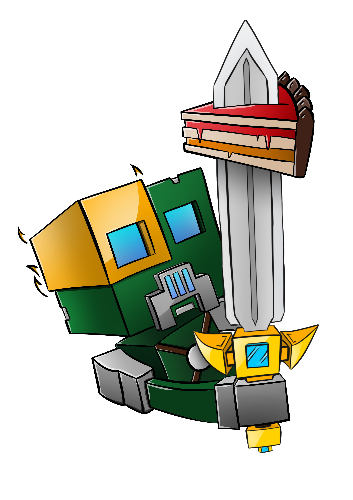

Level design
I learnt this because of my vacation job. I enjoyed playing the game Minecraft with friends and started to build. After a lot of playtime and practice, I got asked by a fairly large youtuber to design a map for him. I did this together with a bunch of friends and he ended up playing it, this is the most famous scene from the map and has been viewed by millions of people. Most of what is seen in this scene is designed by me. After this we got asked by another rather big youtuber to design a lobby for him. We did this and this also ment the start of my carreer in level designing. When it became summer and it became appareant that the server was going to be quite successful, he decided to hire a couple of us full time. We got paid for each map we made and in the end we got paid about the same amount as we would have gotten paid for any other job. The server kept growing and at the end of the summer we got 3 million unique people who logged in. We got put in contact with a designer at Ubisoft, who proposed to give us a couple of classes about leveldesigning. After about 40 hours of class we could call ourselves full on level designers.
Graphical design
Ofcourse in your lifetime you get in contact with Photoshop. When I was 14 I decided to have a real try at it and started following tutorials. Because Photoshop isn't free I decided to start with Paint.net, which is a free program, just a little less advanced. After a couple of months I quit playing around with it for a long time.
After a couple of years I had the need again to use Photoshop. I got the program again and I worked in it with a graphics designer. He designed the thumbnails, I edited them by changing the title and the episode number. As time went by I started getting need for assets in videos, like numbers poping on the screen, frames for facecams and normal effects like writing, which got made in Photoshop and animated by video editing. Because of this I started figuring things out in Photoshop again, and following tutorials again.
To end with I also did some 3d rendering with Cinema4D, but I didn't get too much indepth. I mainly used premade assets and added light and texture to it. Some of the renders had this many lightcalculations that the rendercomputer needed over 6 hours to make a single render.
Video editing
I gathered a lot of contacts in the time I worked as a leveldesigner, including youtubers. I became friends with a rather big youtuber. He asked me to help him with a series of video's consisting out of 5 episodes, as a commentater. I agreed to do it and we ended up getting about 2 million views on the series.
A rather big amount of people asked if I had a youtuber channel in the reactions. I didn't have this at the time so I started one. I started making videos and I was given a licence for Sony Vegas Pro, including rendersettings and artwork for my channel. I also found an artist who wanted to help me in the future with thumbnails and assets for my channel. So I started recording videos, and following tutorials on how to edit them. I ended up getting about 45.000 subscribers and 1 million views. I also made a video for Insomnia 2014. I did this from september 2013 till october 2014. At this time I don't do this anymore because of time issues.
Programming
I always had a lot of interest in computers and technology, and how it worked. when I was 12 - 13 I researched it a bit and I discovered Java. I started reading the API and making simple little snippers of code. I also started reading other people's code, and change little things or copy it and use it in other situations. Eventually when I thought I had enough knowledge about it I started writing little programs, games and mods.
After this I put Java aside and didn't program for a long time. In my first year at the Hogeschool Gent I picked programming up again as a part of the course.